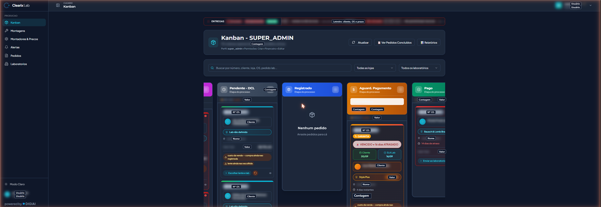
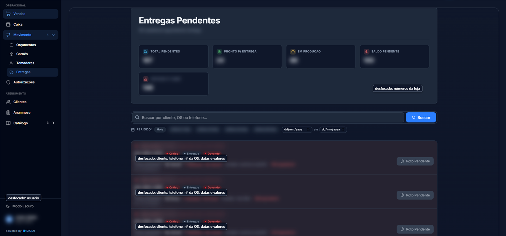
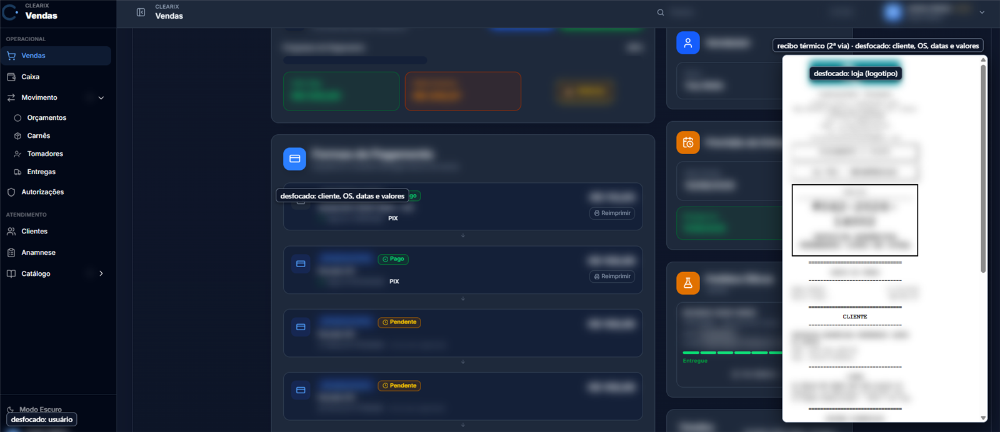
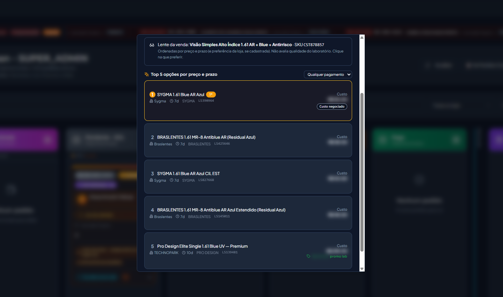

Sistema para óticas · feito dentro de uma ótica
Venda, carnê, laboratório, WhatsApp e financeiro da ótica no mesmo sistema, o mesmo que roda hoje no balcão de uma ótica de verdade.
Agendar 20 minutos de demonstração ou fale com a gente no WhatsApp →Antes
Depois

Quem usa
“[frase do dono da ótica da casa, sobre antes e depois do balcão]”
[nome e função, com autorização por escrito]
depoimento a coletar aprovado pelo dono; hoje não há cliente externo, então a voz é a da própria operação da casa e deve ser dita assim ("uma rede de óticas da Grande São Paulo").
Para começar sem agendar
Conteúdo para quem ainda não quer falar com ninguém, ligado às dores da loja.
O que conferir todo dia para o caixa bater com o banco.
conteúdo a produzir Baixar →Como não deixar o cliente sumir quando a receita vence.
conteúdo a produzir Baixar →Os números dos guias vêm da folha única; nada de estatística de terceiros sem fonte.
Na tela


Como funciona
A venda começa pelo grau. O sistema filtra as lentes que servem para aquela receita e barra combinação impossível antes de fechar.
À vista ou no carnê, no mesmo fluxo, com contrato e promissória gerados na hora.
Antes de comprar a lente, veja preço e prazo lado a lado entre os laboratórios. A escolha é sua. A OS segue para o laboratório pelo WhatsApp.
Kanban por etapa, linha do tempo de cada pedido e alerta de atraso. O atraso aparece na tela antes de virar ligação do cliente.
Só sai quitada ou com carnê. Garantia e segundo par ficam ligados à OS original.
Parcela baixada, caixa conferido e comissão calculada da venda entregue, não de planilha.
O que a gente mostra primeiro na demonstração
Compara preço e prazo. Quem decide é você. Não avaliamos qualidade de laboratório; esse julgamento continua sendo seu.

Operação real · medido em 14 e 15/09/2026
Em vez de logotipos, mostramos o que o sistema registrou numa ótica real, com data.
OS de 2020 a 2025 vieram do sistema anterior: é histórico preservado, não processado pelo Clearix. Números do banco de produção, sem dado pessoal.
Ingredientes por pacote
Quantidades
Medido numa rede de óticas da casa, com 1 loja vendendo todo dia.
O que não tem
Depois de pedir
Como começar
Vinte minutos, com a gente na tela: da receita à entrega, no fluxo que a sua loja já tem.
Antes de propor qualquer coisa, entendemos como a sua loja trabalha hoje.
Implantamos com a gente acompanhando. O que você usar define o que fica.
Preço público, sem letra miúda. Sem período grátis. O piloto é pago e combinado depois da demonstração.
Dúvidas
A implantação começa por uma parte da operação, com a gente acompanhando a equipe no começo. Ninguém recebe um sistema inteiro de uma vez.
Por isso a demonstração vem antes da proposta: olhamos como a sua loja trabalha e mostramos onde o Clearix encaixa, e onde não encaixa.
Sim, como serviço orçado à parte, depois de examinarmos uma amostra do seu banco. Os dados são conferidos antes de a loja operar, porque dado errado na origem vira erro no balcão.
Sim. Uma rede de óticas da Grande São Paulo opera no Clearix: uma loja vende nele todos os dias e o histórico de outras cinco lojas da mesma rede está preservado no mesmo banco. Cada pessoa vê o que pode, por loja e por papel.
Uma pessoa da DIGIAI, em horário comercial.
Não nesta fase. Preferimos dizer isso agora do que prometer e não entregar.
Os planos começam em R$ 349 por mês, sem período grátis. O piloto é pago e combinado depois da demonstração.
Agende uma demonstração assistida. Se não fizer sentido para a sua loja, a gente fala isso na hora.
Agendar 20 minutos de demonstração1.694 OS em 2026 numa ótica real · números do banco, 14 e 15/09/2026